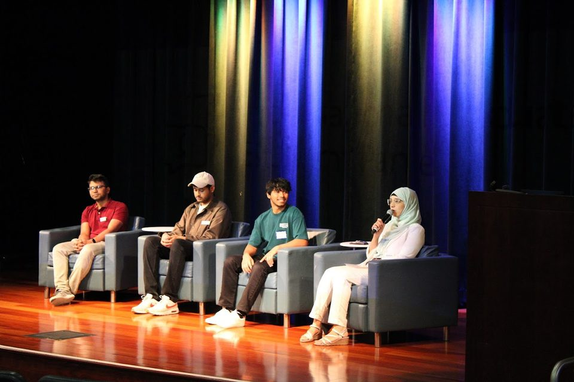

About Me
Hey, I'm Ambarish
I'm a robotics engineer at Toborlife.ai in the Bay Area. I help design the humanoid loop: teleop data collection, training VLAs, and getting them onto the robot. I care a lot about real-time latency, and I try to stay current with the research and with how labs and companies actually ship. A lot of that knowledge still lives in a few people's heads; we're trying to turn it into a platform others can use. Before this I did production IoT in India, then a master's at SJSU on autonomous driving.
Outside of that I like jokes, street food, and board games with people who take them way too seriously.
How I got here
I started as a software developer in India, building IoT platforms and backends at startups. At SmartHub.ai I led a team of 6 on a physical security platform across 10K+ cameras. When a password rotation knocked thousands of devices offline and nobody knew why, I traced it through the stack, brought them back, and wrote tests so it wouldn't happen again. That stuck with me: the work isn't done until other people can depend on it.
I moved to the US for an M.S. in Computer Engineering at San Jose State. My thesis, MoRAL, taught NVIDIA Cosmos Reason 2 to read a bird's-eye view from LiDAR and radar, then to reason about driving. We presented it at IEEE IMC 2026 in Fukuoka. At Toborlife I help with Unitree G1 and Go2: teleop data, VLA training (Isaac GR00T, Cosmos), latency, and making that pipeline usable by more than a handful of people.
Teaching
I write tutorials when I hit the same ROS 2 / Isaac / Jetson issues twice. Putting the steps down saves me (and hopefully someone else) a weekend.
- YouTube: Isaac Sim in Docker, Cosmos, Jetson, sensor fusion. Videos
- ROS 2 course: first node through Nav2. Course site
- Medium: Isaac ROS on Jetson, bird's-eye view, world models
ISSS Global Leader
At SJSU I was a Global Leader with International Student and Scholar Services (ISSS): helping international students settle in, running campus-life events, and sitting on stage when we needed a student voice. I also peer mentor, have taught robotics to primary school kids, and volunteer at community events and food pantries when I can.

Skills
- Physical AI
- Isaac GR00T N1.7 Cosmos Reason 2 Cosmos 3 π0 Isaac Teleop Gear Sonic
- Robots and edge
- Unitree G1 Go2 Jetson Thor Jetson AGX ROS 2 Isaac ROS Isaac Sim
- Perception
- LiDAR BEV NVIDIA Warp PyTorch LoRA
How I work
Small changes, then measure. I like working with both technical and non-technical people. I'm happiest at the messy edge where software has to talk to hardware.
What I'm looking for
I have a full-time role at Toborlife.ai. I'm also open to other robotics work on humanoids, autonomy, or perception. Authorized to work in the United States.
🏀 When I'm Not Coding
Want to connect?
If you're in robotics or just curious about the work, email is fine. I try to reply.
Let's talk →